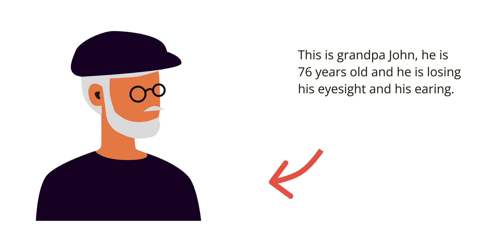

About
This website was created as an accessible alternative to traditional personal cards. It was designed for John, a 76-year-old internet user who has experienced age-related vision and hearing loss. The interface features large, easy-to-read typography, text-to-speech with adjustable speed and volume, high-contrast colours, simple navigation, keyboard accessibility, and the option to increase text size by up to 200%. The aim is to present information in a clear and calm way that is easy for elderly users to interact with.
Older web user, with vision and hearing loss
